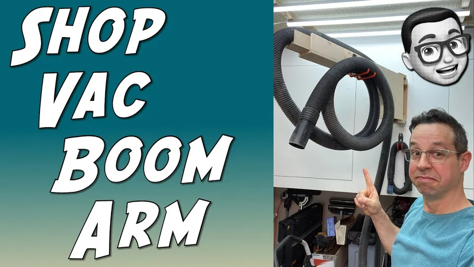

Inaugural video of my new YouTube Channel: Fed Learns To Make
This is the first video of my new YouTube channel called Fed Learns To Make.
The idea behind the channel is to follow my journey as I learn to become a maker by watching hundreds and hundreds (and hundreds) of YouTube videos about all kinds topics. I’ve made some things here and there, but I never focused on methodically learning woodworking, mold making, cos play, metal work, electronics, machinery, etc.
YouTube is an amazing source of information and learning, but sometimes it can be overwhelming due to the sheer number of videos on any particular topic. I’ll watch them all (or most of them) and distill down what I’ve learned in the videos I create, giving viewers links to the best videos on specific techniques or ideas.

Play video: Building a Shop Vac Boom Arm // Overhead Shop Vac Hose // Make space in your workshop // WoodworkingRelated Video Links:
Stumpy Nubs video with Dura-Grit sanding blocks:
https://youtu.be/BhFIZQvywM
Make Anything kerf cut videos:
https://youtu.be/JS9yMUpoWME
https://youtu.be/ngC5S5vWQ4g
My Tools:
Dewalt DW745 10-inch Table Saw: https://amzn.to/2YO5qUm
DFM Small Square: https://amzn.to/2YO5qUm
Dewalt Fixed Base Router (DWP611): https://amzn.to/3ifwWBU
Elmer's Wood Glue Max: https://amzn.to/31CDHYv
Porter Cable Cordless Brad Nailer: https://amzn.to/3gmBCEb
WEN 4210T Drill Press: https://amzn.to/3eSV0sm
WEN 6502T Sander: https://amzn.to/3dPTshl
My Video Equipment:
Barrina LED Light Fixtures: https://amzn.to/3iwobUm
Sony Alpha a6400 Mirrorless Camera: https://amzn.to/2YPZ7Q6
Deity V-Mic D3 Shotgun Microphone: https://amzn.to/2YTmVmu
Neewer LED Video Lights: https://amzn.to/2ZrWbZf
Garage Hooks from the video: https://amzn.to/2YScOxW
Note: Amazon links are affiliate program links.